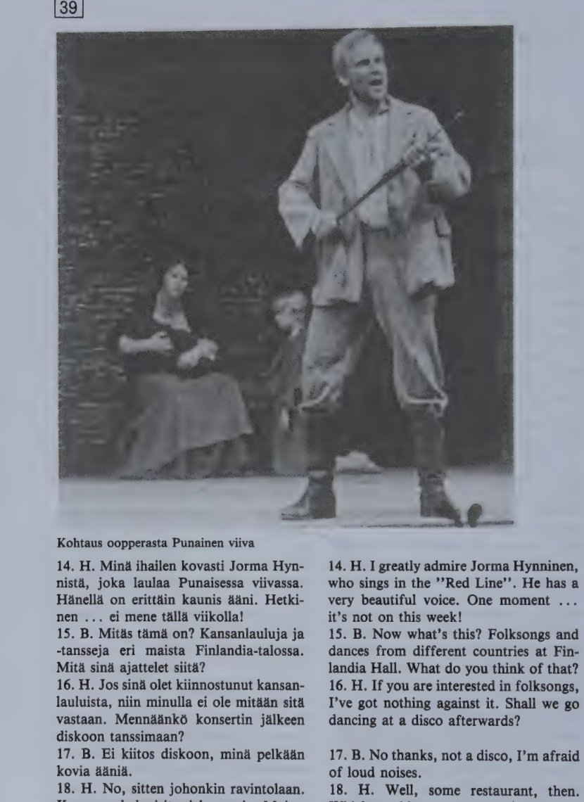

Kappale 39 / Lesson 39#
Heikki ja Betty menevat illalla ulos / Heikki and Betty are going out for the evening#
Suomi |
English |
|---|---|
1. H. Kuule Betty, mennaanko ulos tana iltana? |
1. H. Look here, Betty, shall we go out this evening? |
2. B. Mina lahtisin kylla hirvean mielellani, mutta tanaan minulla on niin paljon toita … |
2. B. I’d really love to go, but I have such a lot of work to do today … |
3. H. Betty, sina tulet ihan hulluksi, kun aina vain luet ja luet. Nythan on viikonloppu. |
3. H. Betty, you’ll go completely crazy if you just study and study all the time. It’s weekend now, isn’t it? |
4. B. No, mennaan sitten. Mutta mihin? |
4. B. Well, let’s go then. But where? |
5. H. Katsotaan millaisia ilmoituksia on taman paivan lehdessa. |
5. H. Let’s see what sort of ads there are in today’s paper. |
Tutkivat yhdessa sanomalehtea.
Suomi |
English |
|---|---|
6. H. Lahtisitko sina mieluummin teatteriin vai elokuviin? |
6. H. Would you rather go to the theater or to the cinema? |
7. B. Riippuu ohjelmasta. Mista sina itse olet kiinnostunut? |
7. B. Depends on the program. What are you interested in yourself? |
8. H. Mina olen kiinnostunut kaikesta. Teatterit … Kansallisteatterissa menee Kesayon unelma. |
8. H. I’m interested in everything. The theaters … “A Midsummer Night’s Dream” is on at the National Theater. |
9. B. Mina en valittaisi nahda Shakespearea suomeksi. Mina haluaisin nahda suomalaisen naytelman, vaikka en ymmartaisikaan siita kaikkea. |
9. B. I wouldn’t care to see Shakespeare in Finnish. I’d like to see a Finnish play, even if I wouldn’t understand all of it. |
10. H. Kaupunginteatterin suurella nayttamolla on Kiven Seitseman veljesta. Mutta se on ensi-ilta ja loppuunmyyty! |
10. H. The big stage of the City Theater has Kivi’s “Seven Brothers”. But it’s a premiere, and it’s sold out. |
11. B. Onpa meilla huono onni! |
11. B. We do have bad luck! |
12. H. Se on minun syyni. Miksi mina en ajatellut tata asiaa aikaisemmin! |
12. H. It’s my fault. Why didn’t I think of this earlier! |
13. B. No, ei se mitaan tee. Tehdaan jotain muuta. Mina olen kuullut, etta ooppera on Suomessa hyvin suosittua. Olisi kiva nahda jokin suomalainen ooppera, esimerkiksi Aulis Sallisen Punainen viiva. Mina en ole ollut oopperassa pitkaan aikaan. |
13. B. Well, never mind. Let’s do something else instead. I’ve heard that the opera is very popular in Finland. It would be nice to see some Finnish opera, for instance Aulis Sallinen’s “Red Line”. I haven’t been to the opera for a long time. |

Suomi |
English |
|---|---|
14. H. Mina ihailen kovasti Jorma Hynnista, joka laulaa Punaisessa viivassa. Hanella on erittain kaunis aani. Hetkinen … ei mene talla viikolla! |
14. H. I greatly admire Jorma Hynninen, who sings in the “Red Line”. He has a very beautiful voice. One moment … it’s not on this week! |
15. B. Mitas tama on? Kansanlauluja ja -tansseja eri maista Finlandia-talossa. Mita sina ajattelet siita? |
15. B. Now what’s this? Folksongs and dances from different countries at Finlandia Hall. What do you think of that? |
16. H. Jos sina olet kiinnostunut kansanlauluista, niin minulla ei ole mitaan sita vastaan. Mennaanko konsertin jalkeen diskoon tanssimaan? |
16. H. If you are interested in folksongs, I’ve got nothing against it. Shall we go dancing at a disco afterwards? |
17. B. Ei kiitos diskoon, mina pelkaan kovia aania. |
17. B. No thanks, not a disco, I’m afraid of loud noises. |
18. H. No, sitten johonkin ravintolaan. Kumpaan haluaisit mieluummin, Majesteettiin vai Kultalintuun? |
18. H. Well, some restaurant, then. Which would you prefer, the “Majesty” or the “Golden Bird”? |
19. B. Minulle sopii kumpi vain. |
19. B. Either is all right with me. |
20. H. Ainakin Kultalinnussa on aina hauska ohjelma ja tanssia. Ja paljon ihmisia, varsinkin lauantaisin. Minun pitaa tilata poyta heti. |
20. H. At least the “Golden Bird” always has a nice show and dancing. And lots of people, especially on Saturdays. I must reserve the table at once. |
matkustan mielellani = minusta on hauska matkustaa
han matkustaa mielellaan
matkustatteko te mielellanne?
en, mina olen mieluummin kotona
sunnuntaisin (= aina sunnuntaina), keskiviikkoisin; arkisin (arkipaivisin),
pyhaisin; aamuisin, iltaisin, oisin; kevaisin, kesaisin
missa? kotona ulkona kaukana
mista? kotoa ulkoa kaukaa
mihin? kotiin ulos kauas
Kielioppia / Structural notes#
1. Direct object#
The basic rules for the direct object were learned in lessons 25:1, 26:1 and 29:3; some additional information on the matter has been accumulated later. This lesson will offer a survey of the direct object, including a couple of new details.
A. Negative sentences#
Rule 1. In negative sentences, the direct object is always in the partitive.
B. Affirmative sentences#
Rule 2. If the direct object expresses indefinite amount or number, it is always in the partitive:
Finnish |
English |
|---|---|
Ostan liha/a ja omeni/a. |
I’ll buy (some) meat and (some) apples. |
Rule 3. If the direct object expresses definite number, it is in the basic form pl.:
Finnish |
English |
|---|---|
Soimme omena/t. |
We ate the apples. |
Rule 4. If the direct object is one countable thing or a definite amount, it is in the genitive:
Finnish |
English |
|---|---|
Syon omena/n. |
I’ll eat an/the apple. |
Paistamme liha/n. |
We’ll roast the meat. |
Exceptions:
a) Basic form sing. must be used instead of the gen.
in imperative sentences:
Syo omena!/ Eat an/the apple!in
taytyysentences:Sinun taytyy syoda omena./ You must eat an/the apple.in
tehdaansentences:Syodaan omena!/ Let’s eat an/the apple!Me syodaan omena./ We’ll eat an/the apple.(Omena syodaan.)/ The apple will be eaten.in impersonal phrases of the type
on aika tehda se; on hauska tehda se:On aika syoda omena./ It’s time to eat an apple.On hauska syoda omena./ It’s nice to eat an apple.
b) The accusative in -t of personal pronouns and kuka corresponds to both the gen. and the basic form of nouns:
Finnish |
English |
|---|---|
Tuon lapse/n tanne. |
I’ll bring the child here. |
Tuon hane/t tanne. |
I’ll bring him here. |
Tuokaa lapsi tanne! |
Bring the child here! |
Tuokaa hane/t tanne! |
Bring him here! |
c) Numbers, except for yksi, never appear in the gen. in the direct object:
Finnish |
English |
|---|---|
Syon yhde/n (omena/n). |
I’ll eat one (apple). |
Syon kaksi (omenaa). |
I’ll eat two (apples). |
Syo yksi (omena)! |
Eat one (apple)! |
Syo kaksi (omenaa)! |
Eat two (apples)! |
Rule 5. The partitive may also be used to express that the action of the verb in the sentence is continuous, incomplete, irresultative (= not leading to a final result):
Finnish |
English |
|---|---|
Syon omena/a. |
I’m eating an/the apple. |
Luetko sina ta/ta romaani/a illalla? |
Will you read this novel (but not finish it) in the evening? |
Syon omena/n. |
I’ll eat an (entire) apple. |
Luetko tama/n romaani/n? |
Will you read this novel (and finish it)? |
Note that some verbs inherently express continuous or irresultative action and therefore always or mostly appear with the part. Among them are most verbs denoting emotion, e.g. rakastaa to love, vihata to hate, ihailla to admire, pelata to fear; many verbs in -ella, e.g. ajatella to think, onnitella to congratulate, opiskella to study, totella to obey; and a large number of others, e.g. auttaa to help, etsia to look for, harrastaa to take an interest in, hairita to disturb, odottaa to wait for, expect.
Important to remember: Any reason for using the partitive in the direct object will overrule all other considerations.
2. The translative case#
Finnish |
English |
|---|---|
Mikko tuli sairaa/ksi. |
Mikko became ill. |
Onko han tullut paremma/ksi? |
Has he become any better? |
Virtaset maalasivat talonsa punai/se/ksi. |
The Virtanens painted their house red. |
Syksylla lehdet muuttuvat keltai/si/ksi. |
In fall, leaves become (change) yellow. |
Kaija lukee laakari/ksi. |
K. studies to become a doctor. |
The translative case expresses change in a state, condition, or capacity (cp. the essive case, lesson 38:2). It is used with the verb tulla to become and other verbs indicating change.
In time expressions, the translative denotes the point or period of time for which something is planned.
Finnish |
English |
|---|---|
Tama laksy on huomiseksi (ensi maanantaiksi). |
This assignment is for tomorrow (for next Monday). |
Perhe lahti maalle viikonlopu/ksi. |
The family went to the country for the weekend. |
The translative has an extensive idiomatic usage. Examples:
Finnish |
English |
|---|---|
Onne/ksi ei alkanut sataa. |
Fortunately, it did not start raining. |
Mita ostaisimme lahja/ksi isalle? |
What could we buy as a present for father? |
Mita sisu on englanni/ksi? |
What is “sisu” in English? |
Structure:
Sing. sairas (sairaa/n) sairaa/ksi
Pl. (sairai/ta) sairai/ksi
Sing. parempi (paremma/n) paremma/ksi
Pl. (parempi/a) paremmi/ksi
Note:
tama paiva -> ta/ksi paiva/ksi
se -> si/ksi
mika paiva? -> mi/ksi paiva/ksi?
(More about the translative in Finnish for Foreigners 2.)
Sanasto / Vocabulary#
Finnish |
English |
|---|---|
aikaisemmin (# myohemmin) |
earlier |
+ensi-ilta-a-illan-iltoja |
opening night, premiere |
hullu-a-n-ja |
crazy, mad |
ihail/la ihailen ihaili ihaillut (jotakin henkiloa tai asiaa) |
to admire (somebody or something) |
ilmoitus-ta ilmoituksen ilmoituksia (cp. ilmoittaa) |
announcement; advertisement |
kiinnostunut: olla k. jostakin |
to be interested (in something) |
+kulta-a kullan kultia |
gold; darling, dear |
laulu-a-n-ja |
song; singing |
+loppuun/myyty-a-myydyn-myytyja |
sold out |
mielella/ni-si-an-mme-nne-an |
with pleasure, willingly |
tehda mielellaan |
to like to do, like doing |
luen mielellani |
I like to read |
mieluummin (comp. of mielellaan) |
rather, more willingly, preferably |
tehda mieluummin (kuin) |
rather do, prefer doing |
naytelma-a-n naytelmia |
(theater) play |
nayttamo-a-n-ita |
stage |
+pela/ta pelkaan pelkasi pelannyt (jotakin henkiloa t. asiaa) |
to fear, be afraid (of somebody or something) |
+riippu/a riipun riippui riippunut (jostakin) |
to hang; to depend on, be up to (something) |
+suosittu-a suositun suosittuja |
popular, well-liked |
syy-ta-n syita |
reason, cause; fault |
tila/ta-an-si-nnut (cp. tilaus) |
to order, reserve; subscribe to |
tutki/a-n tutki tutkinut (cp. tutkimus) |
to study, examine, investigate, do research |
unelma-a-n unelmia |
dream |
viiva-a-n viivoja |
line, stroke |
aani aanta aanen aania |
voice, sound; noise |
*
Finnish |
English |
|---|---|
+arki arkea arjen arkia (= arki/paiva) |
weekday, working day |
pyha-a-n pyhia |
holy, sacred, saint |
pyha/paiva |
holiday, Sunday |
How to use the partitive: A review#
Basic meaning:
Form |
Meaning |
|---|---|
Part. sing. |
Indefinite amount |
Part. pl. |
Indefinite number |
The partitive is used in this meaning
as the subject of “there is” type of sentences (17:1) and “have” sentences (17:2):
Kupissa on kahvia.Onko sinulla rahaa?Poydalla on kuppeja.Onko sinulla postimerkkeja?as the direct object (26:1):
Ostan syotavaa.Ostan omenoita.as the complement of the verb
olla(34:2):Tuo on maitoa.Nama ovat ruusuja.
The partitive is also used
to express the thing that is not there, the thing not possessed (17:1, 2), and the negative direct object (25:1, 26:1):
Kuvassa ei ole taloa.Meilla ei ole puhelinta.He eivat osta autoa.Talossa ei ole portaita.Miehella ei ole silmalaseja.En loyda silmalasejani.as the direct object to show that the action of the verb is continuous, incomplete, or irresultative (39:1):
Isa lukee lehtea.Mina rakastan hanta.Etsin silmalasejani.Kaikki odottavat Liisan haita.as the complement of the verb
olla, to tell what an uncountable is like (34:2):Vesi on kylmaa.as the complement of the verb
olla, to tell what people or things are like (34:2):Ruusut ovat kauniita.with words indicating measure or amount (14:2, 21:2):
Osta kilo sokeria!Erkki juo paljon olutta.Osta kilo banaaneja!Syon paljon hedelmia.with
montaand with cardinal numbers other thanyksi(16:1):Heilla on kaksi koiraa.Montako lasta teilla on?in greetings, wishes, and exclamations (14:2, 21:2):
Hyvaa huomenta!Hauskaa matkaa!Kauniita unia!with a number of post and prepositions (37:2):
Tulkaa kotiin ennen kuutta!Mita varten han teki niin?Han on kiltti meita kohtaan.Ala mene ulos ilman kasineita!in comparisons, to replace
kuin(32:1):Han on sinua vanhempi.Tupakoivatko naiset miehia vahemman?